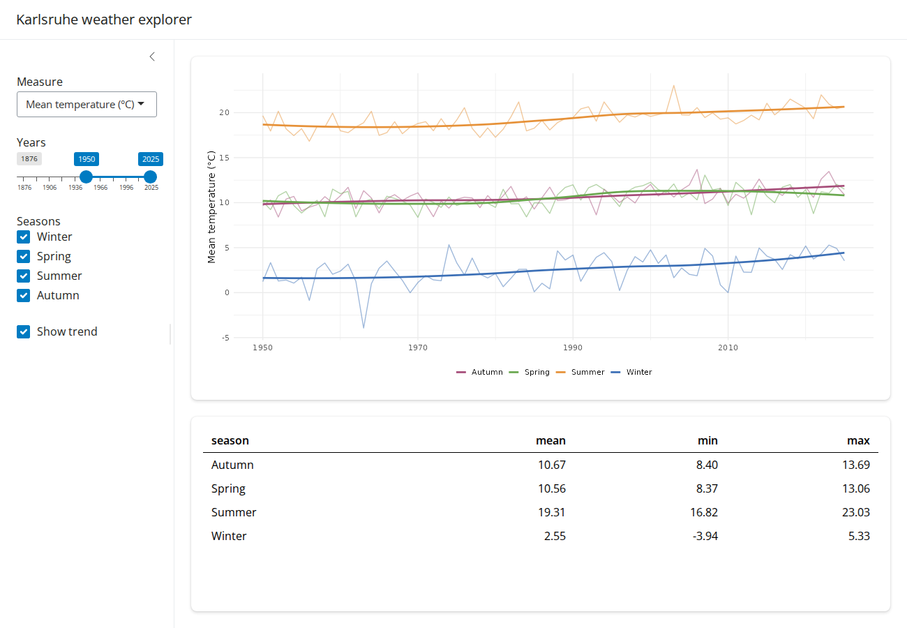

if (!require(pacman)) install.packages("pacman")p_load(tidyverse, shiny, bslib)Interactive web apps from R: structure, inputs and outputs, reactivity, and deployment
Shiny turns R code into an interactive web app: users change inputs (a dropdown, a slider), and plots and tables update. No HTML or JavaScript needed.
This module builds one app around the weather data and the plots from c02:

c04/app/app.R.if (!require(pacman)) install.packages("pacman")p_load(tidyverse, shiny, bslib)Every app has three parts: a UI (the frontend: what the user sees), a server function (the backend: what R computes), and shinyApp() to connect them.
ui <- page_fluid(
sliderInput("n", "Number of days", min = 10, max = 1000, value = 100),
plotOutput("histogram")
)
server <- function(input, output) {
output$histogram <- renderPlot({
tibble(temp = rnorm(input$n, mean = 10, sd = 8)) |>
ggplot(aes(x = temp)) +
geom_histogram(bins = 30)
})
}
shinyApp(ui, server)Run it by pasting it into the console, or save it as app.R in its own folder and click Run App in Positron. shiny::runApp("c04/app") starts the app in a folder.
app.R with ui, server, and shinyApp(ui, server) at the end. Simplest, our default: c04/app/app.R.ui.R (frontend) and server.R (backend), plus an optional global.R for packages, data and settings shared by both. Shiny runs global.R first on its own, so it needs exactly that name. Easier to navigate once an app grows: c04/app_two_files/. This version also has an interactive ggplotly() chart and a second tab with the warming stripes from c02.Both run the same way with runApp() on the folder. A folder can’t have both: if there’s an app.R, Shiny ignores ui.R and server.R.
Inputs all follow the same pattern: an ID (how the server refers to it), a label, and the choices or range.
selectInput(
"measure",
"Measure",
choices = c("Mean" = "temp_mean", "Max" = "temp_max")
)
sliderInput(
"years",
"Years",
min = 1876,
max = 2025,
value = c(1950, 2025),
sep = ""
)
checkboxGroupInput(
"seasons",
"Seasons",
choices = c("Winter", "Spring", "Summer", "Autumn")
)
checkboxInput(
"smooth",
"Show trend",
value = TRUE
)
dateRangeInput(
"dates",
"Period",
start = "2025-01-01",
end = "2025-12-31"
)Outputs are placeholders, filled by the server: plotOutput(), tableOutput(), textOutput(), plotlyOutput() (from plotly, for ggplotly()).
The layout comes from bslib, Shiny’s modern UI package: a page with a sidebar for the controls, and cards for the outputs.
ui <- page_sidebar(
title = "Karlsruhe weather explorer",
sidebar = sidebar(
selectInput("measure", "Measure", choices = measures),
sliderInput("years", "Years", min = 1876, max = 2025, value = c(1950, 2025), sep = "")
),
card(plotOutput("trend_plot")),
card(tableOutput("summary_table"))
)The server is not run top to bottom like a script. Each render*() block is a reactive expression: Shiny tracks which input$... values it uses, and re-runs it whenever one of them changes, and only then.
output$trend_plot <- renderPlot({
weather |>
filter(year(date) >= first(input$years), year(date) <= last(input$years)) |>
ggplot(aes(x = date, y = temp_mean)) +
geom_line()
})The inputs are only available inside reactive code: input$years outside a render*() or reactive() block is an error.
# Karlsruhe weather explorer: a one-file Shiny app
# Run from the project root: shiny::runApp("c04/app")
if (!require(pacman)) install.packages("pacman")
p_load(tidyverse, shiny, bslib)
weather <- read_csv("weather_karlsruhe.csv", show_col_types = FALSE)
measures <- c(
"Mean temperature (°C)" = "temp_mean",
"Maximum temperature (°C)" = "temp_max",
"Minimum temperature (°C)" = "temp_min",
"Precipitation (mm)" = "precip",
"Sunshine (hours)" = "sunshine"
)
season_colors <- c(
Winter = "#3B6FB6",
Spring = "#6AA84F",
Summer = "#E69138",
Autumn = "#A64D79"
)
# ---- Frontend ----
ui <- page_sidebar(
title = "Karlsruhe weather explorer",
sidebar = sidebar(
selectInput("measure", "Measure", choices = measures),
sliderInput(
"years",
"Years",
min = 1876,
max = 2025,
value = c(1950, 2025),
sep = ""
),
checkboxGroupInput(
"seasons",
"Seasons",
choices = names(season_colors),
selected = names(season_colors)
),
checkboxInput("smooth", "Show trend", value = TRUE)
),
card(plotOutput("trend_plot")),
card(tableOutput("summary_table"))
)
# ---- Backend ----
server <- function(input, output) {
# Shared data pipeline: re-computed only when one of its inputs changes
seasonal <- reactive({
weather |>
mutate(year = year(date)) |>
filter(
year >= first(input$years),
year <= last(input$years),
season %in% input$seasons
) |>
select(year, season, value = all_of(input$measure)) |>
group_by(year, season) |>
summarize(value = mean(value, na.rm = TRUE)) |>
ungroup()
})
output$trend_plot <- renderPlot({
measure_label <- measures |>
keep(\(m) m == input$measure) |>
names()
plot <- seasonal() |>
ggplot(aes(x = year, y = value, color = season)) +
geom_line(alpha = 0.5) +
scale_color_manual(values = season_colors) +
labs(
x = NULL,
y = measure_label,
color = NULL
) +
theme_minimal(base_size = 14) +
theme(legend.position = "bottom")
if (input$smooth)
plot <- plot + geom_smooth(method = "loess", formula = y ~ x, se = FALSE)
plot
})
output$summary_table <- renderTable({
seasonal() |>
group_by(season) |>
summarize(
mean = mean(value),
min = min(value),
max = max(value)
)
})
}
shinyApp(ui, server)An app needs a server running R. Options, from easiest:
rsconnect::deployApp("c04/app"). Everything the app reads must live inside the app folder, which is why c04/app/ has its own copy of the CSV.Your task: add one feature to c04/app/app.R, for example:
radioButtons() input to choose between "yearly mean" and "yearly maximum",textOutput() stating the warmest year in the selected period,plotlyOutput() / renderPlotly() with ggplotly(),downloadButton() that saves the current plot as PNG.Your task: build a new one-file app for a question of your choice, e.g. “How many hot days did each year have?” with a bar chart and a slider for the threshold temperature (25, 30 or 35 °C), or a heatmap of monthly means (months × years) with a selectable measure.